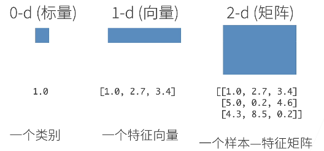
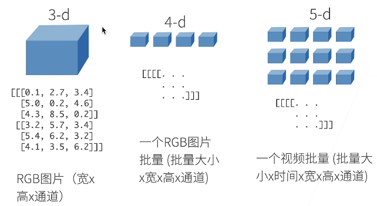
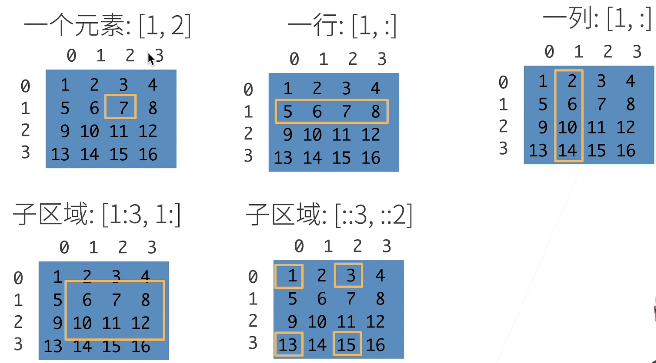

认识pytorch重要元素：张量，与其基本操作。
基础知识
N维数组样例
N维数组是机器学习和神经网络的主要数据结构。


创建数组
创建数组需要：
- 形状：如3×4矩阵
- 每个元素的数据类型：例如32位浮点数
- 每个元素的值：例如全是0，或符合高斯分布的均匀数
访问元素

代码实现
首先，导入torch，虽然它被称为PyTorch。
张量
张量表示一个数值组成的数组，这个数组可能有多个维度。
1
2
| x = torch.arange(12)
print(x)
|
1
| tensor( [0, 1, 2, 3, 4, 5, 6, 7, 8, 9, 10, 11] )
|
张量的shape
我们可以通过shape属性来访问张量的形状。
1
2
| x_shape = x.shape
print(x_shape)
|
1
| tensor( [ 0, 1, 2, 3, 4, 5, 6, 7, 8, 9, 10, 11] )
|
也可以获取张量中元素的总数。
1
2
| x_num = x.numel()
print(x_num)
|
reshape改变形状
如果要改变一个张量的形状而不改变元素数量和元素值，可以使用reshape函数。
1
2
| X = x.reshape(3, 4)
print(X)
|
1
2
3
| tensor([[ 0, 1, 2, 3],
[ 4, 5, 6, 7],
[ 8, 9, 10, 11]])
|
生成张量
使用全0、全1和其他常量或从特定分布中随机采样的数字。
1
2
3
4
| zeros = torch.zeros((2, 3, 4))
random = torch.randn(3, 4)
print(zeros)
print(random)
|
1
2
3
4
5
6
7
8
9
10
| tensor([[[0., 0., 0., 0.],
[0., 0., 0., 0.],
[0., 0., 0., 0.]],
[[0., 0., 0., 0.],
[0., 0., 0., 0.],
[0., 0., 0., 0.]]])
tensor([[ 0.2104, 1.4439, -1.3455, -0.8273],
[ 0.8009, 0.3585, -0.2690, 1.6183],
[-0.4611, 1.5744, -0.4882, -0.5317]])
|
通过提供包含数值的Python列表来位所需张量中的每个元素赋予确定值。
1
2
| list = torch.tensor([[1, 2, 3], [4, 5, 6], [7, 8, 9]])
print(list)
|
1
2
3
| tensor([[1, 2, 3],
[4, 5, 6],
[7, 8, 9]])
|
张量的运算
常见的标准算术运算符都可以被升级为按元素运算。
1
2
3
| x = torch.tensor([1.0, 2, 4, 8])
y = torch.tensor([2, 2, 2, 2])
x+y, x-y, x*y, x/y, x**y
|
1
2
3
4
5
| (tensor([ 3., 4., 6., 10.]),
tensor([-1., 0., 2., 6.]),
tensor([ 2., 4., 8., 16.]),
tensor([0.5000, 1.0000, 2.0000, 4.0000]),
tensor([ 1., 4., 16., 64.]))
|
还可以按元素方式应用更多计算。
1
| tensor([2.7183e+00, 7.3891e+00, 5.4598e+01, 2.9810e+03])
|
张量的拼接
也可以把多个张量连结在一起。
1
2
3
| X = torch.arange(12, dtype=torch.float32).reshape((3, 4))
Y = torch.tensor([[2.0, 1, 4, 3], [1, 2, 3, 4], [4, 3, 2, 1]])
torch.cat((X, Y), dim=0), torch.cat((X, Y), dim=1)
|
1
2
3
4
5
6
7
8
9
| (tensor( [[ 0., 1., 2., 3.],
[ 4., 5., 6., 7.],
[ 8., 9., 10., 11.],
[ 2., 1., 4., 3.],
[ 1., 2., 3., 4.],
[ 4., 3., 2., 1.]]),
tensor( [[ 0., 1., 2., 3., 2., 1., 4., 3.],
[ 4., 5., 6., 7., 1., 2., 3., 4.],
[ 8., 9., 10., 11., 4., 3., 2., 1.]]))
|
cat函数的dim参数表示拼接的维度。
通过逻辑与算符构建二元张量。
1
2
3
| tensor( [[False, True, False, True],
[False, False, False, False],
[False, False, False, False]])
|
张量求和
对张量中的所有元素进行求和会产生一个只有一个元素的张量。
广播机制
即使形状不同，我们仍然可以通过调用广播机制来执行按元素操作。
广播机制，两个维度相同的张量，当某一张量的某一维元素数低于另一张量时，就进行复制自身来匹配另一张量。
1
2
3
| a = torch.arange(3).reshape((3, 1))
b = torch.arange(2).reshape((1, 2))
a, b
|
1
2
3
4
| (tensor([[0],
[1],
[2]]),
tensor( [[0, 1]]))
|
1
2
3
| tensor( [[0, 1],
[1, 2],
[2, 3]])
|
张量的读取与写入
可以用 [-1] 选择最后一个元素，可以用 [1:3] 选择第二个和第三个元素。
1
2
3
| (tensor( [ 8., 9., 10., 11.]),
tensor( [[ 4., 5., 6., 7.],
[ 8., 9., 10., 11.]]))
|
除读取外，我们还可以通过指定索引来将元素写入矩阵。
1
2
3
| tensor( [[ 0., 1., 2., 3.],
[ 4., 5., 9., 7.],
[ 8., 9., 10., 11.]])
|
也可以为多个元素赋值相同的值，我们只需要索引所有元素，然后为它们赋值。
1
2
3
| tensor( [[12., 12., 12., 12.],
[12., 12., 12., 12.],
[ 8., 9., 10., 11.]])
|
张量的内存机制
运行一些操作可能会导致为新结果分配内存。
1
2
3
| before = id(Y)
Y = Y + X
id(Y) == before
|
执行原地操作。
1
2
3
4
| Z = torch.zeros_like(Y)
print ('id(Z):', id(Z))
Z[:] = X + Y
print ('id(Z):', id(Z))
|
1
2
| id(Z): 140452400950336
id(Z): 140452400950336
|
如果在后续计算中没有重复使用 X，我们也可以使用 X[:] = X + Y 或 X += Y 来减少操作的内存开销。
1
2
3
| before = id(X)
X += Y
id(X) == before
|
张量不同形式的转换
转换为 NumPy 张量。
1
2
3
| A = X.numpy()
B = torch.tensor(A)
type(A), type(B)
|
1
| (numpy.ndarray, torch.Tensor)
|
将大小为1的张量转换为 Python 标量。
1
2
| a = torch.tensor([3.5])
a, a.item(), float(a), int(a)
|
1
| (tensor([3.5000]), 3.5, 3.5, 3)
|